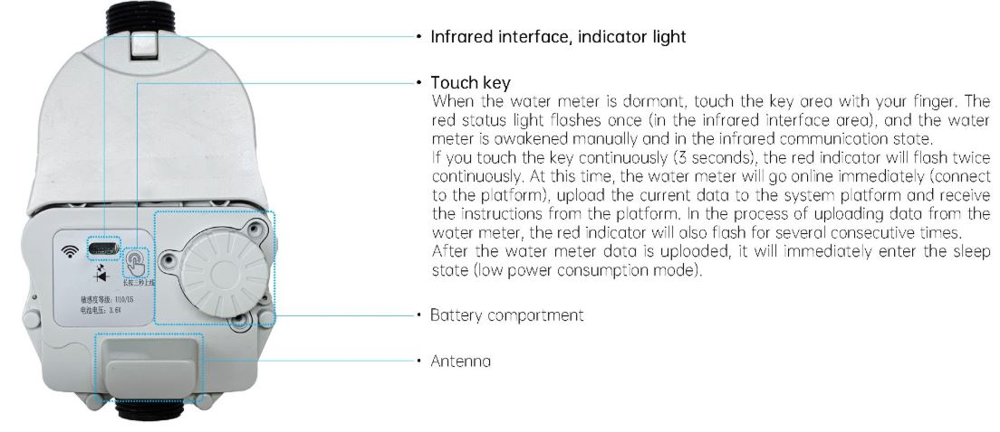
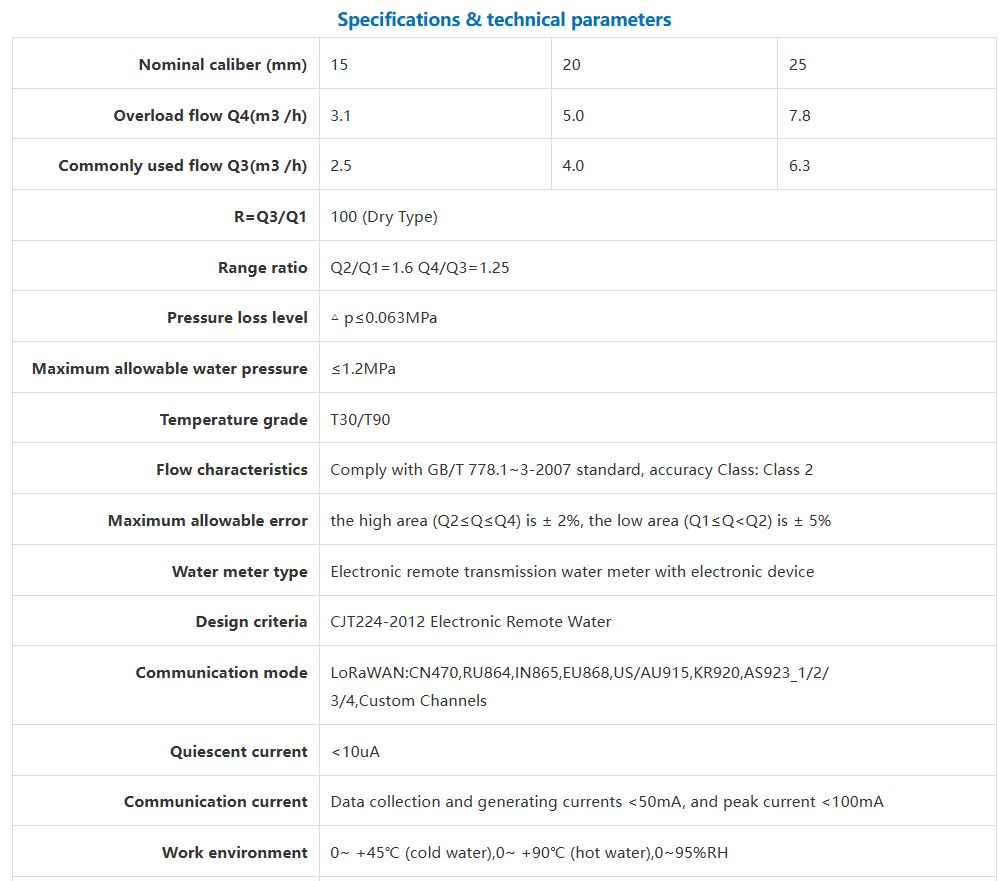
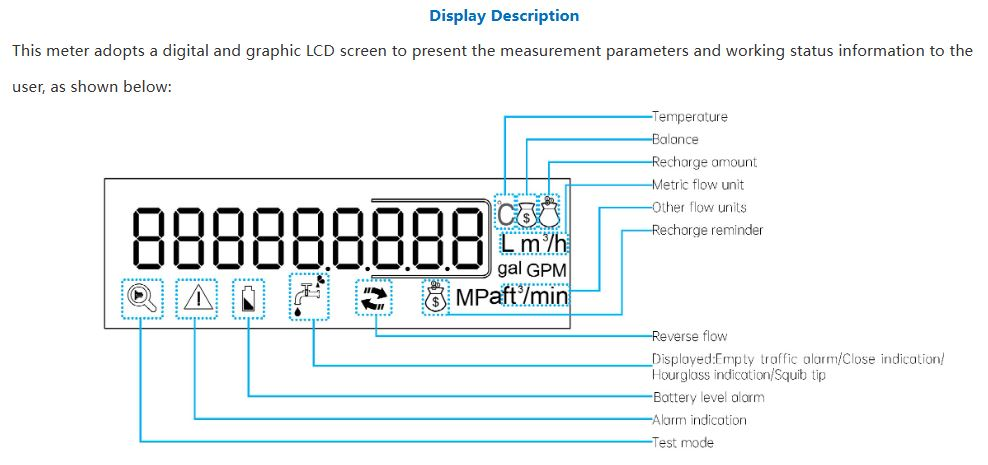
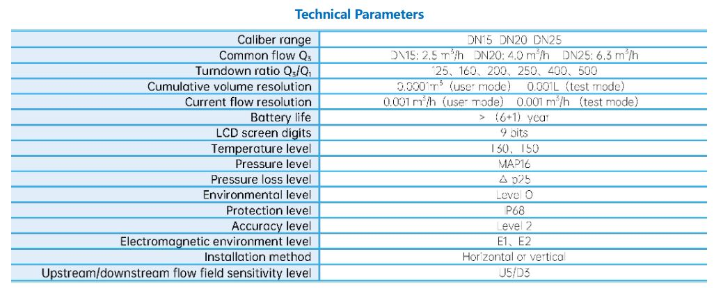
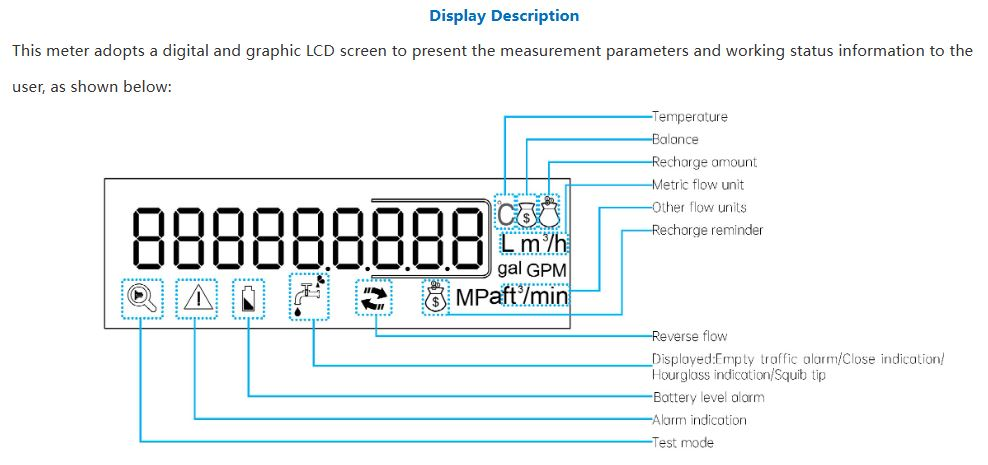
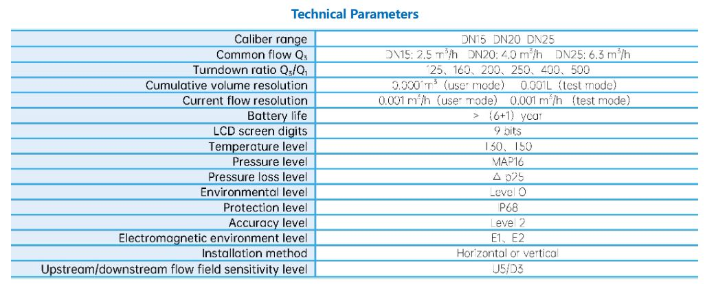
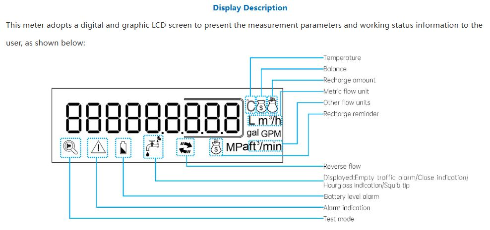
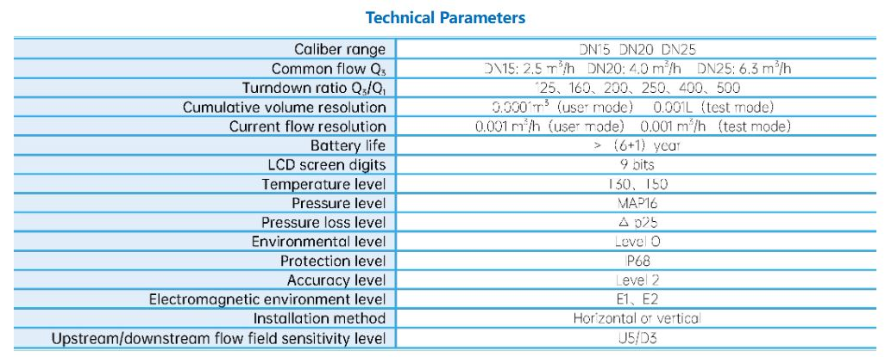

Especificaciones Técnicas modelo residenciales
 Modelo residencial ultrasónico
 



El medidor de gas inteligente de DIAGNOSIS permite realizar lecturas remotas del consumo, generar alertas por fugas y monitorear excesos de uso. Ideal para ambientes residenciales e industriales con foco en la seguridad y eficiencia.
Tecnología de punta para medición precisa y comunicación remota
El medidor de agua inteligente del Internet de las Cosas (IoT) se compone de un medidor de base seco, una válvula de bola eléctrica, un sensor de resistencia magnética.
El medidor de agua ultrasónico incorpora un diseño de medidor y válvula integrados. Combinando válvulas de medición y control.
El medidor de agua industrial de aletas de tornillo verticales de gran diámetro tipo WS incorpora un filtro de acero inoxidable, ideal para entornos de agua industrial.


Nuestros especialistas están listos para ayudarte a seleccionar el medidor ideal para tu aplicación.
Contactar a un Especialista